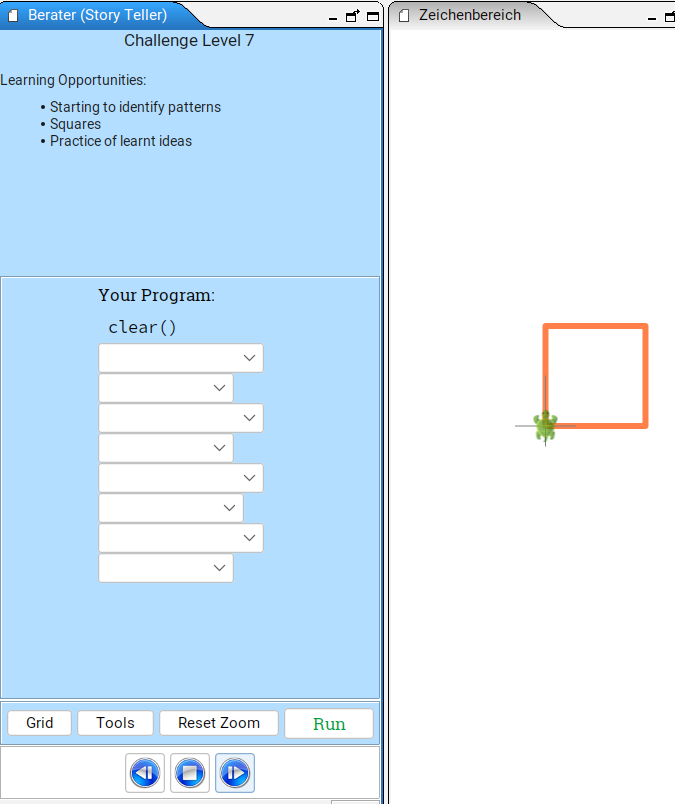
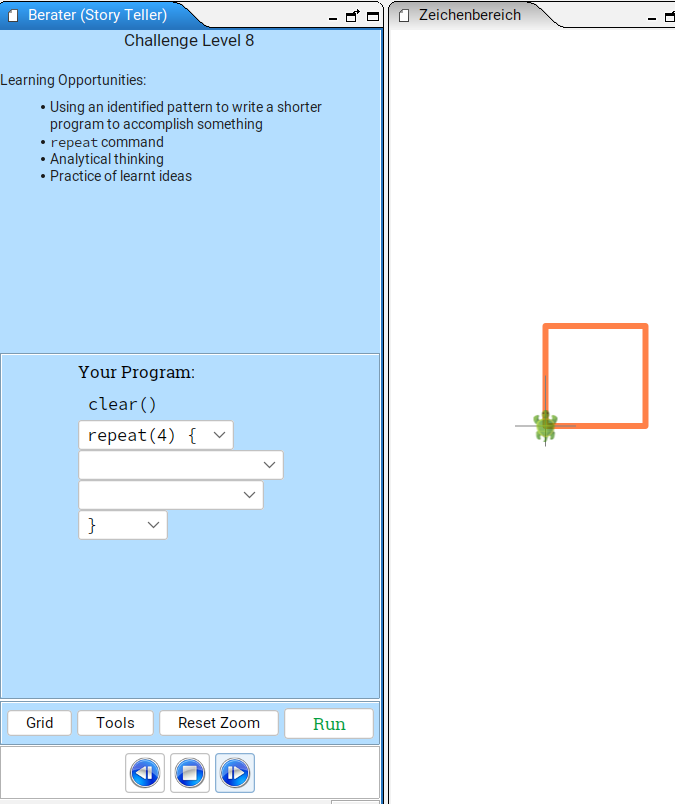
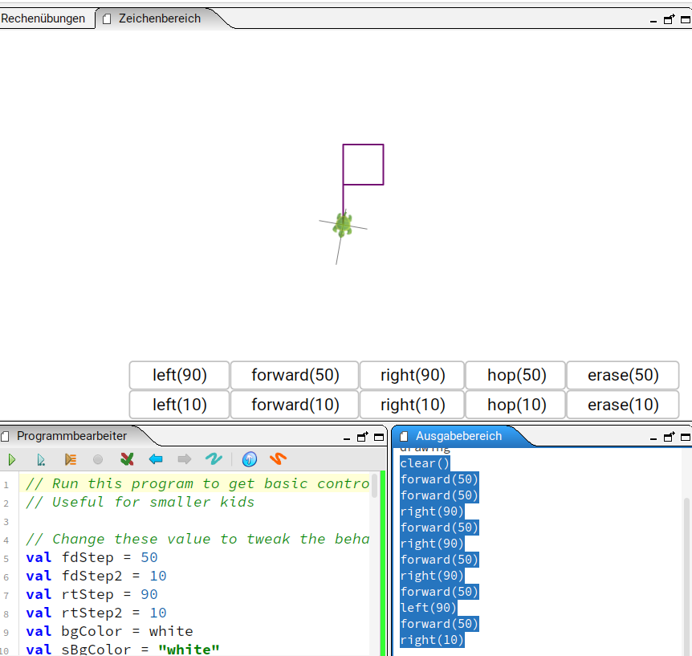
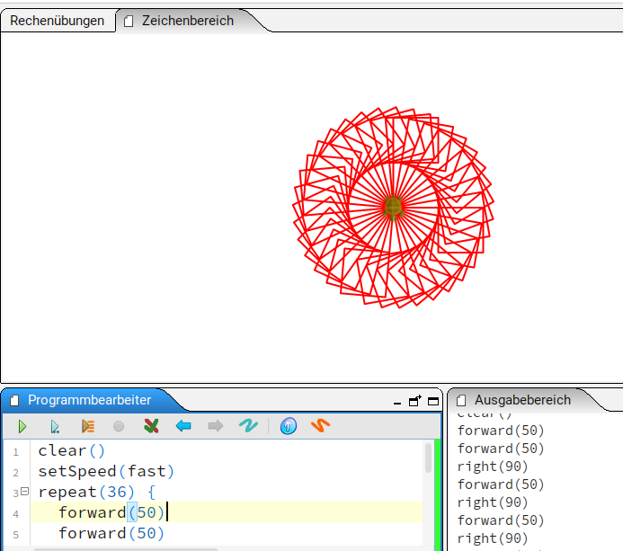
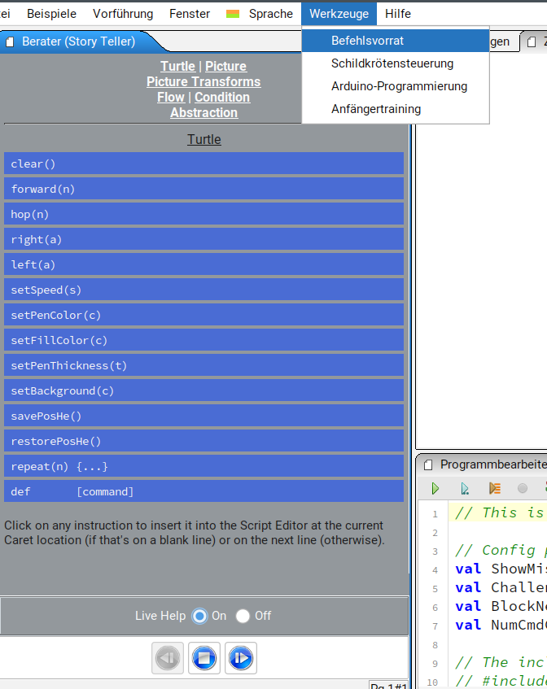
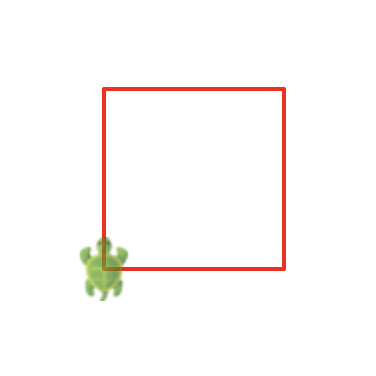
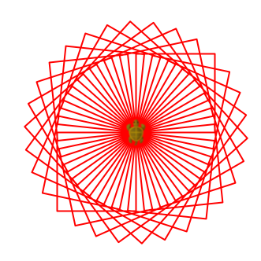
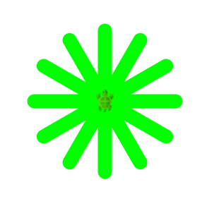

Programmieren mit Kojo
Aufgaben
Aufgabe 1
- Starte das Anfängertraining (Menü Tools->Beginner
Challenges).
- Löse Level 1
- Löse Level 7 und 8: das Quadrat mit und ohne
repeat(4) { ... }.


Aufgabe 2
- Starte die Schildkrötensteuerung (Menü Tools->Turtle
Controller).
- Male eine Figur, bei der die Schildkröte am Start wieder ankommt,
aber leicht verdreht ist (z.B. 10 Grad verdreht).
- Kopiere den Code vom Ausgabefenster (Output Pane) in den
Programmierbearbeiter (Script Editor)
(Click Output Pane, Ctrl-A, Ctrl-C, Click Script Editor, Ctrl-A,
Ctrl-V).
- Wiederhole den Code (ohne
clear()) so oft, dass eine
Drehfigur entsteht (z.B. repeat(36) { ... }).
- Programm kann beliebig oft gestartet werden mit dem grünen Pfeil im
Script Editor.
- Wenn Dir die Schildkröte zu langsam ist, kannst Du zu Aufgabe 3
springen und danach nochmal schönere Drehfiguren produzieren.


Aufgabe 3
- Starte die Dokumentation des Befehlsvorrats (Tools->Instruction
Palette).

- Wähle “Live help: On”.
- Halte den Mauszeiger über den Turtle Befehl
setSpeed(s).
- Füge den Befehl
setSpeed(...) in Dein Programm aus
Aufgabe 2 ein, um die Geschwindigkeit der Schildkröte zu verändern. In
der Dokumentation werden mögliche Werte genannt: “Possible values are
…”. Probiere verschiedene Werte aus, um die Auswirkungen zu
beobachten.
Aufgabe 4
Zeichne Dein eigenes Quadrat mit Hilfe des Befehlsvorrats. Verwende
dabei den forward-Befehl nur einmal.

Tipps: - Verwende Wiederholung/repeat - Ganz oben im Befehlsvorrat
gibt es “Flow” - Dort gibt es Hilfe zum Befehl
repeat [command]
Aufgabe 5
- Zeichne Deine eigene Drehfigur mit Hilfe des Quadrats aus Aufgabe 4
(z.B. durch
repeat innerhalb
repeat(n) {...}).

Tipps: - Die Wiederholungszahl mal der leichten Drehung sollte 360
Grad ergeben (z.B. repeat(30) { ... right(12) })
Bonusaufgabe
Nutze den Befehlsvorrat, um herauszufinden wie Du Linienfarbe und
Strichstärke veränderst.
- Halte die Maus über die Befehle
setPenColor und
setPenThickness
- Versuche folgende Figur zu zeichnen.
